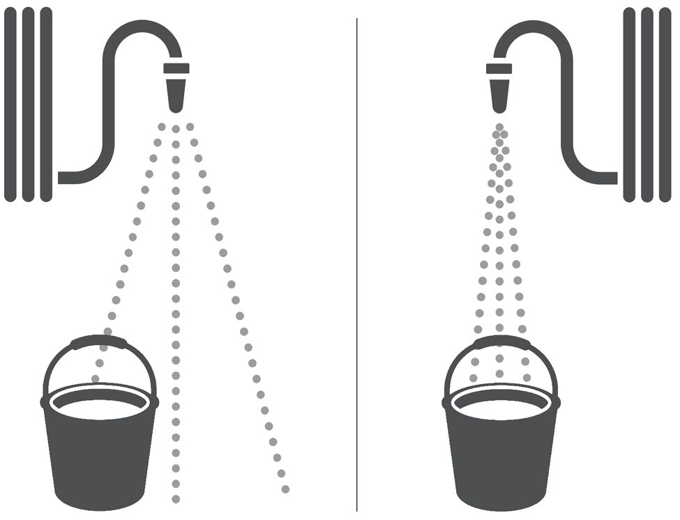
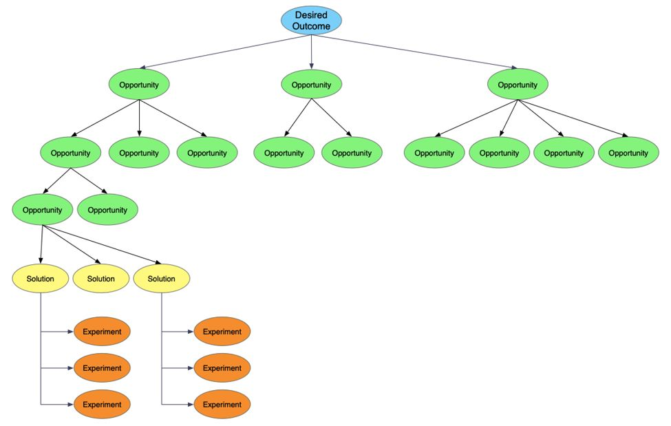

Chapter 7
I've had a TV remote where I couldn't find the power button in the dark (why was it not in the top corner?), and another that was so tiny it inevitably got lost in the couch cushions (thanks, Apple TV!). My library provides ebooks through an app that stalls for a second every time I flip the page. During tax season, I click on every tab and menu on my banking site to find where they put my tax forms. Some antivirus software cheerfully interrupts you every week to let you know that no problems were found.
These decisions remind me of the importance of good product sense, and the pain when it's lacking.
Sometimes, product problems can be more serious. Confusing UI has caused people to tweet their search queries (or worse!) to the world. Social media algorithms can promote extremist content. The Galaxy Note 7 phone was prone to a teeny issue called "spontaneous combustion."
Most frequently, poor product choices mean people don't use the product at all. The video streaming app Quibi couldn't be watched on a TV nor could clips be shared on social media when it launched. Google Glass was a brand of smart glasses that couldn't overcome the "creepiness" factor.
Product and design sense is about so much more than making things look pretty. Building great products requires translating insights into good product decisions. It requires focusing on what's most important to a product's success.
Sometimes, you just want to get stuff done , and it can be tempting to jump right into designing solutions. I know the feeling. There might be executives or sales people who insist they know exactly what feature is missing. You might have engineers who are eagerly waiting for work.
But rushing to a solution without thoroughly understanding the problem can lead you astray. You can build something no one wants, and not build the thing that people actually do want.
Product discovery is a key piece of preventing these mistakes. During product discovery, you validate that users actually have the problems you think they do, and that they would actually value the solutions your team came up with.
While there are many ways to go about product discovery, one well-documented way is the GV Design Sprint. 1 A design sprint is a five-day structured process for product discovery.
What you'll notice here is that the team spends a whole day thinking about which problems or opportunities could best help with the desired goal.
For more on product discovery, the book Inspired by Marty Cagan is an excellent guide.
Always bring things back to the goals
Connecting work back to the goals is one of the most important things that a PM does.
Think of your team's work as a spray of water from a hose trying to fill up a small bucket. Some people are spraying too wide and a bit off-center, so a lot of their work isn't filling up the bucket.
Some people may even be pointing at the wrong bucket. Even if they started spraying in the right direction, over time it may drift.

Refocusing people on the goals saves them time and achieves better, more reliable results.
Here are some examples of goals to clarify:
If you get these wrong, you'll get the details wrong and optimize for the incorrect things.
Don't hide internal goals and constraints
Hank got harsh feedback on his proposed roadmap: the projects were much too small and didn't line up with the team's ambitious goals.
He felt like the feedback was unfair. He had done the best he could in the face of several constraints. One of the engineers was an intern who would only be around for 3 months, and another engineer was taking a long vacation. Plus, the team was switching to a new technology stack. How could he be expected to also tackle big ambitious projects during that quarter?
Hank wasn't wrong, but he also wasn't totally right. The mistake he made was leaving those internal goals and constraints out of the conversation about goals. He needed to share them as context for the roadmap decisions. When he kept them secret, he appeared to show poor judgment.
We all have to make compromises sometimes; that's understandable and doesn't make you a bad PM. But just as you might show the user data backing up certain decisions, it's important to explain the context behind these compromises.
Drive product decisions by laying out your insights and reasoning
It's a common interview question, but it's also a common real-life question. What do you do when someone disagrees with you? What if they're more senior—maybe even more knowledgeable and experienced—than you? Do you fight for what you believe is right, or concede to the "expert" (perhaps even your boss)?
This is a tough question, sometimes mired in politics and interpersonal relationships. But luckily, you typically don't need to choose between being stubborn and being a pushover; you can drive product decisions by showing the thought process behind your conclusions.
When you articulate your frameworks and show the intentionality behind your choices, people will either agree with you or move the conversation to a higher level about your insights and reasoning. If you disagree on insights, there's often a way to quickly learn or test which line of reasoning is correct.
Partner with your designer to come up with great solutions
Katie Guzman, PM Lead at Asana, joined the team in the middle of a major redesign. She agreed with nearly all the design choices, except for one that jumped out at her as being a little odd—the header took up too much space. The designer agreed, but none of his potential solutions were passing design review. She asked if she could take a stab, and with a little bit of subtle rearrangement, she came up with a design that worked for everyone.
The designer is usually responsible for the solution from a user experience perspective, but that doesn't mean that product managers don't need to be good at product design. Product managers are a designer's primary partner and often come up with key elements of the solution or key feedback that leads to better solutions.
A PM shouldn't dictate a solution to the designer; rather, they should share their thoughts in a way that's respectful of the designer's role. 2
As a PM, you're responsible for defining what success looks like and ensuring that the solution meets those criteria. This means that you can't sit back and quietly accept whatever solution the designer comes up with. Product design takes teamwork. Just like a PM expects teammates to sometimes catch missing corner cases or sub-optimal decisions in spec review, designers expect teammates to sometimes catch missing steps or suboptimal designs in design review.
It's important to build up your design sense so you can be a strong partner to your designer.
For more on how to work well with designers, including bringing them problems, not solutions, see "Working with designers" in Chapter 26 .
As a PM, you are the primary person who is in a position to ensure that both your team and company act ethically. If the product you're asked to build has the potential to harm people, you need to realize that and insist that the product changes.
This won't always be easy. Mikal Lewis shared with us that he has faced this challenge from both a career and product perspective: 3
I've faced this challenge as an African-American product leader. Modern work culture prioritizes great performance over good humans. However, being ethical and building ethical products means making a conscious choice that other things are more important to you than winning. Before you're faced with an ethical dilemma, ask yourself what values you won't compromise—even if it costs you your job.
Over a long career, the probability that you'll face an ethical dilemma approaches one. This is doubly true for minority groups.
He challenges us to think about our values and which ones we wouldn't violate—even if it meant losing our job.
Well intentioned product choices can lead to unintended outcomes. The people designing Facebook's news feed wanted to promote interesting content, but accidentally built algorithms that favor polarizing or extremist content.
Sharon Lo, a PM for Ethics and Society at Microsoft, provides a perspective on how to build ethical products that centers on intentionality.
We've all seen the way technology has impacted society so quickly in the past decade. As PMs, we shape the products in technology. Are we crafting the world we want to live in?
How can you be intentional as a PM of whom or what may be affected and how they might be affected? Consider direct, indirect, and excluded users. Indirect users might include bystanders and people whose jobs are impacted by the product. Excluded users are people who can't use your product, for example, because of accessibility.
To understand the impact on these groups, see Microsoft's Harms Framework. 4 This will help ensure you consider the different types of unintended harms your product might create and mitigate those harms.
|
CATEGORY |
TYPE OF HARM |
|
Risk of injury |
Physical or infrastructure damage |
|
Emotional or psychological distress |
|
|
Denial of consequential services |
Opportunity loss |
|
Economic loss |
|
|
Infringement on human rights |
Dignity loss |
|
Liberty loss |
|
|
Privacy loss |
|
|
Environmental impact |
|
|
Erosion of social and democratic structures |
Manipulation |
|
Social detriment |
Advocate for a balanced solution ⚡
Early in your career, you might fall into the trap of seeing PM and design as opposite ends of a seesaw. You end up in constant negotiations with your designer; they're asking for more time to polish up their designs, and you're asking for less time and faster shipping. Ultimately, you end up meeting somewhere in the middle. You might even think of this as a healthy balance.
Some people even go so far as to propose choosing extremes as a negotiating tactic . "Pick something further than what you want, so you'll get closer to what you actually want," they'll say.
But this attitude will end up holding you back. People will begin to lose trust in your judgment, and your designer might feel like they're constantly fighting with you and that you're not on the side of good design.
Instead, switch things around so that you always represent what you think is best overall. If you're previously been going with extremes, you can let people on your team know that you're changing your approach. Show that you have the judgment to know when more time should be invested in design, so that your team can trust you when you suggest the opposite.
All of these actions demonstrate to your designer that you are a good representative of their concerns, and that you're on their side. Your designer should feel like you're a great partner, not an adversary.
Give great product feedback ⚡⚡
As you advance in your career, reviewing other people's product decisions becomes a bigger part of your job.
Your goal should be to help the team create the best product and make the best trade offs. You want to share and explain your feedback so the team really understands what you're saying, acts on the feedback, and feels comfortable coming back to you for advice the next time.
Here are some things to keep in mind for great product feedback:
Giving good product feedback is one of the most leveraged ways to help create great products.
Create product (and/or design) principles ⚡⚡
Product principles are a set of values that your company uses to guide designs, evaluate solutions, and resolve difficult tradeoffs. They require extensive collaboration and buy-in to create, but once you have them, they'll simplify many future decisions.
You'll know you need principles when teams repeatedly get into challenging philosophical disagreements, or you feel like you're getting pushback on things that seem obvious, such as consistency.
Before you create your own principles, you can first take a look at the design and product principles other companies have created. Design principles often involve universal design, consistency, tone of voice, and delight. 5 On the product side, common principles are created around user trust, innovation, and lean development. 6
To get started, it's helpful to come up with many examples where principles could have helped teams make a choice. Those examples will highlight the difficult tradeoffs you need to resolve. There isn't much value in creating a list of generic principles that don't change how your team designs products.
Once you have the examples, identify what the core tradeoffs are. What were people valuing differently that led them to make different choices?
It's great to make the process collaborative, but in the end, make sure that the key stakeholders have fully bought into the principles. They'll need to reinforce the principles and ensure that they're being used to guide decisions.
Pick the fastest and best ways to test hypotheses
Validating your ideas and testing your hypotheses doesn't have to be expensive. The faster and more lightweight your test, the more tests you'll be able to run, and the faster you'll be able to iterate past bad ideas to the ones that will be impactful.
Here are a few ways to speed up hypothesis testing:
Look for the fastest and cheapest way to validate your hypotheses so that you'll be able to test most of your risky assumptions before investing too much time in them. Save the more expensive methods for the "big bets" where you need the extra precision and confidence.
It would be nice if people just used the products they like, but in reality most people will not be proactive about using your product. Instead, you'll need to think carefully about the triggers that remind people to come back to your product. This is an area where you'll need to be especially careful about ethics: too much usage of your product isn't always good for the person using it.
Here are a few approaches to help bring people back to your product at the appropriate time:
Think carefully about how your product is meant to fit into people's lives, and then make it easy for people to use your product when they want it. If there aren't many good triggers to prompt people to use your app, consider if there are ways to add more.
Product mindset is a habitual approach where you start from problems, goals, and people's needs.
It's about asking yourself, "What problem are we trying to solve?" and, "What problem should we solve?" When you have a product mindset, you notice problems everywhere and you're able to connect those problems to bigger goals in order to figure out whether those problems really matter. You constantly analyze what your goals should be and prioritize accordingly.
Product mindset is a critical quality to possess as a product manager because you spend your days making lots of little decisions. If your mind doesn't automatically remind you to figure out your goals, you could end up making bad decisions. And if you're not thinking deeply about which problems to solve, you'll set bad goals.
If you find yourself rushing into execution before really considering and evaluating your goals, you're not demonstrating a product mindset. If you find yourself focusing on how exciting a solution or technology is without connecting it to the problem it solves, you're not showing a product mindset.
If product mindset isn't natural to you yet, you'll need to work to build this habit.
Developing your product mindset will help you make better decisions.
Practice identifying and prioritizing goals
Go through the following exercise with several products, both technical and non-technical. Choose products where you are not the target audience since those will stretch you more. Try it with your own product and with your competitor's products. The wider the variety, the more you'll learn.
If you want to improve the product mindset of your team, this is an exercise you can do with them, too. Again, you can use your own product, but it's also very useful to use other products.
Write down all of the business and customer goals you can think of
What's the real job that the product does for people?
Mikal Lewis, founder of Praxis Product Leadership, challenges people to think of the real purpose of wearing headphones in an office. It's not just to listen to music; it's also a polite way of signaling other people to not disturb you. Can you find any non-obvious goals for your product?
Do the goals change based on who built the product? For example, when a local government provides a service, they often have goals around providing equal access to everyone in the community that a for-profit company might not have.
Are there multiple users or customers with different goals? A parent buys a toy and a child plays with it. In a marketplace product, you need to attract both buyers and sellers.
When you think you have all of the goals, you can look at the marketing material for the product to see if they mention others you might have missed.
Which goals are critical to the company's mission and success? Do any goals conflict with each other? If so, how should they be balanced against each other?
It can be tempting to say all of the goals are equally important, but that ignores important tradeoffs and strategic choices.
For example, a video streaming platform might care about having a delightful user experience, but that's much less important to their success than having compelling content. People won't come back to the app if there's nothing good to watch.
Stay current with well-designed products
Early web and app design makes us cringe now. Think: 3D text, Comic Sans, flashing banners, chaotic layouts, and the occasional website that beeps out a tune while you dash to kill your sound.
We've come a long way—mostly for the better, but certainly different.
In some cases, product design evolves like fashion, with one style entering as another exits.
In other cases, technological innovations clear the way for better designs. Search-as-you-type and continuous scrolling are popular now, but wouldn't have been feasible back when we were all on dial-up.
And still in other cases, new design patterns evolve because a few key players adopt one approach and the rest of the industry follows their lead. The usage of a heart icon to like/favorite something has become ubiquitous, and it's generally in everyone's best interest to adopt this same imagery.
Great designers around the world are constantly inventing new design patterns and better UI elements that you can incorporate into your own product. By using a wide variety of products, you'll build up your sense of what the best-of-breed patterns are and where standards are emerging. You'll also see the places where there are a few common options and you can form your own opinions on which work best.
Good design rarely requires reinventing the wheel. Most of the time, it's better to reuse a familiar pattern.
Product managers are responsible for defining what success looks like, and a big part of that is determining the quality bar.
If your bar is set too low, you'll ship buggy or unpolished products that cause users to lose faith in it. You might notice the quality issues show up in the metrics, or they might slowly add up over time. Beyond the product implications, teammates won't want to work with you if they're not proud of the things your team ships.
If your bar is set too high, you'll invest too much in finding "the perfect" solution, leading to a bad return on investment. Users miss out on important functionality while they're waiting for you to perfect it, and your overall product improves more slowly than the competition. Your team might also be reluctant to iterate based on learnings because they've already sunk too much time into it before the launch.
Your users' expectations set a baseline for the quality bar. If your product is less polished or has more bugs than the products they compare it to, it will feel low quality. As other products improve their quality, the acceptable quality bar for your product will rise as well.
Developing your quality bar includes two parts:
Here's how a sample conversation might sound:
Okay, we've just done a thorough team review and noticed these ten issues that I wrote down. Let's go through them and figure out which ones we want to fix before launch.
We should fix all the typos because I'm assuming those will only take a few minutes; does that sound right?
The drop target being small is pretty frustrating; is there any way we could fix it in less than a day? How about we spend an hour looking into it, and if it'll take longer than that, we don't fix it? Designer, does that seem reasonable?
The error message when files are too big is not very helpful, but I know we don't have much control over that dialog, and I don't think many users will hit it. I'll look at the logs and customer tickets a few weeks after launch and we can see if it ends up being a problem.
For more on prioritization, see Chapter 17: Roadmapping and Prioritization
Expand your perspective: Consider more radical solutions ⚡
Early in your career, a lot of the solution space is constrained; you have a set team size, a designated amount of time, and obvious boundaries for what types of solutions you can suggest. As you advance in your career, however, you'll need to shift to seeing those things as flexible rather than fixed.
Here are some questions to consider:
As you move into product leadership, it's important to not only build the best product given the constraints but also to push on those constraints to see which ones are worth the tradeoffs.
Wireframes, prototypes, and flows
Wireframes and prototypes are great ways to share ideas and do early concept testing. Higher fidelity prototypes can be used for usability tests. A wireframe is a still drawing of a part of your product, while a prototype is an interactive model of your product. Most products can and should be tested as prototypes before any significant investment of engineering time.
A key concept in wireframing is "low fidelity." Low fidelity means that the mocks are not meant to be implemented exactly, but rather, they're symbolic of the actual design. Prototypes can be as simple as drawing with a marker on a piece of paper and simulating a "click" by swapping to a new piece of paper. When you draw a low-fidelity wireframe, include only the most important components that the user needs to see. The goal is for wireframing to be fast so you feel comfortable testing ideas and iterating on them.
It's important that your mocks look as low fidelity as they're intended to be, or else you might have engineers accidentally copying colors and spacing from your mock, or creating new components when they should have used existing ones. This is why some prototyping tools purposefully look like they were sketched by hand.
Please note: It is okay to make wireframes to illustrate an idea, but it is not okay to pressure your designer into going with your solution or expect them to just "pretty up" your wireframes. It is also not okay to take all of the fun work by handing over wireframes before the designer got a chance to explore on their own (unless they asked for your help).
Another key concept is "flows." This is the idea that you don't want to think only about static screenshots, but also about the full set of steps that a user will go through, from the very beginning (including empty states), through setup and configuration, to the actual usage. You can represent this with a flow diagram (screenshots connected by arrows), or with an interactive prototype.
It can be helpful to use a tool like Balsamiq, Framer, Sketch, InVision, or Figma to draw wireframes and prototypes. These tools have libraries or kits you can use to represent standard components so that you don't have to draw them yourself. The options for wireframing and prototyping tools are rapidly evolving, so do some research to find out what the latest and greatest ones are.
As a new PM, when I was asked to build a very specific solution, it could feel discouraging. On one hand, I understood that I was junior and shouldn't expect as much leeway. On the other hand, it felt like the real "product" work was taken away from me; I was merely executing someone else's plan.
In reality, that wasn't quite right. Even when asked to build a specific solution, product discovery is essential.
A great mental model for product discovery is Teresa Torres's Opportunity Solution Tree. 7 This visualization helps you widen your perspective and imagine alternative solutions that could help you find a better way to achieve your goal.

For example, when your boss asks you to build a spreadsheet export feature, you can interview internal stakeholders (to learn about their goals for this feature) and customers (to understand their potential usage of it). You might learn that the goal is to close more deals by addressing the reporting requests, or it could be to get the senior managers at the customer's company more involved with the product by sending them summaries. Each of these opportunities can then lead to different solutions, such as building reporting directly into the product, building a PDF summary, or building integration with reporting software.
Product teardowns can yield a number of benefits, including developing your domain knowledge, design sense, and creativity. In a product teardown, you get together with a few people to review another product. As Jens-Fabian Goetzmann explains: 8
Every Friday afternoon, the product management team and other interested folks from the design, research and analytics teams sit together for an hour and "tear down" an interesting mobile or web app. By "tear down," we don't mean "criticize", but rather investigate and reverse engineer the thinking and experience underlying a product. This gives us inspiration to improve our own product.
Try to notice all of the intentional decisions that went into the product so you can learn from them.
Depending on your goals, you can approach the session differently.
It can be tempting to focus on what doesn't work well about the product, but you'll get much more out of it if you focus on what does work well, and look for inspiration.
Many people, when they think about brainstorming, picture a group of people crowded around a table, each shouting out ideas. Unfortunately, research shows that this method reduces the creativity and diversity of solutions. 9 Once one person has said an idea out loud, the rest of the ideas tend to converge around it.
This is not what brainstorming is—or at least what it should be. Brainstorming is a structured process that helps generate creative solutions and includes stakeholders.
Start with independent brainstorming before sharing as a group
To generate a variety of divergent ideas, give people time to write and draw ideas by themselves at the beginning of the meeting before sharing with the rest of the group. When possible, share the context and brainstorming "how might we..." prompt before the meeting so people can think about their ideas in advance if they want. Not everyone loves brainstorming under pressure!
After the independent brainstorm, ask people to share their ideas and leave room for discussion. This is the time when people can build on each other's ideas.
Invite people from multiple teams and roles
When you're setting up the brainstorming session, invite more than just PMs and your feature team. Consider designers, engineers, salespeople, product marketers, customer support representatives, executives, and anyone else who is a stakeholder or who might have a different perspective on the problem.
Inviting a variety of people offers the following benefits:
Set up the brainstorming with some structure
Unstructured brainstorm has its benefits, but it can also feel intimidating. Many people won't know where to get started, and might even preemptively nix their own ideas because they "aren't good enough." A little bit of structure or direction can make things fun and help you achieve more interesting results.
Kate Bennet, Director of Product at Lab Zero, has templates for sprint retrospectives that include several brainstorming activities:
In some retros, I draw a sailboat on the board. The wind represents things that help us; the anchor, things that hinder us. A shark represents the team's fears, and a tropical island is the team's hopes or goals. I'll give everyone a stack of Post-It notes (or a link to an online whiteboard) and give them five minutes to put Post-Its on each part of the image. We found that by mixing it up and changing the format to meet the needs of the group, people get more interested and energized by the retro. They are then more likely to actually share things that matter to them.
Make sure to convey an attitude of being welcoming to good, bad, and wacky ideas. You want everyone to feel comfortable proposing ideas, and even the silly ideas might inspire great ones.
1 . Learn more about the GV Design Sprint at https://www.gv.com/sprint/.
2 . Note here how Guzman asked to give it a try. By doing that, she demonstrated respect for the designer's role, and made him more open to her suggestions too.
3 . Mikal expanded on this at https://community.praxisproduct.com/2020/07/03/good-is-greater-than-great/. .
4 . Explore the Harms Framework at https://docs.microsoft.com/en-us/azure/architecture/guide/responsible-innovation/harms-modeling/. .
5 . Learn more about design principles at https://medium.muz.li/design-principles-behind-great-products-6ef13cd74ccf. .
6 . Learn more about product principles at https://www.productplan.com/product-principles/. .
7 . Learn more about Torres' opportunity solution tree at https://www.producttalk.org/opportunity-solution-tree/
8 . Jens-Fabian elaborates on this at https://www.jefago.com/product-management/product-teardowns-at-yammer/. .
9 . Learn more about this from the Harvard Business Review's article at https://hbr.org/2017/05/your-team-is-brainstorming-all-wrong. .